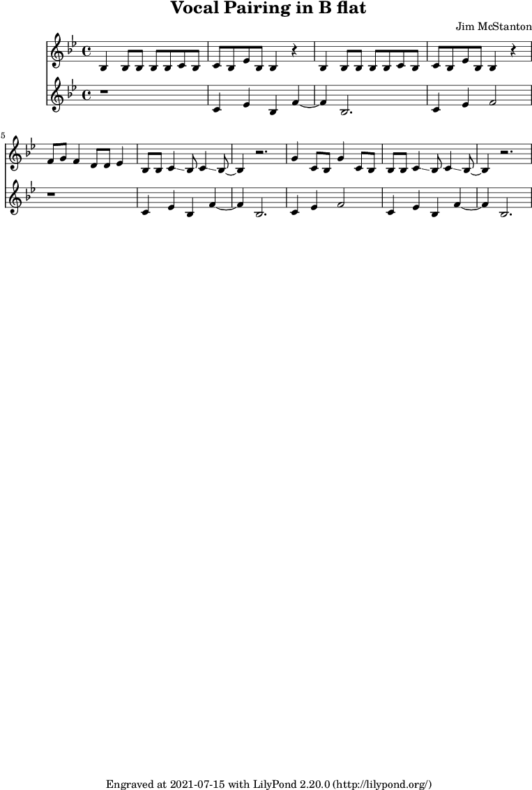

This is just playing around with a melody for a lead and a backup vocal. The idea would be to use this as an intro with some percussion. Not very familiar with writing melodies for vocals other than to limit the amount of jumps, so most of the movement is stepwise with only a few leaps.
